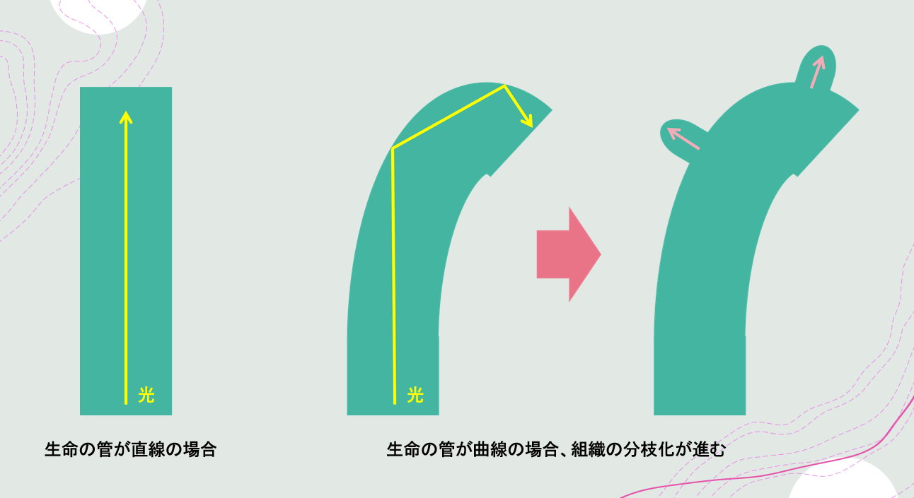

中心体アンテナ仮説と脳
私たちの周りは，さまざまな色に見える．色はなぜ見えるのだろう．光は視神経を通って脳の視覚野に届き，そのエネルギーは脳や全身へ神経信号となって身体中を伝わる．では，なぜ可視光の波長が見えて，赤外線や紫外線は見えないのか．その理由を握るのは，ニューロンに存在する中心体の長さである．
中心体はニューロンが伸びる付け根に存在する細胞小器官である．微小管という弱導電性のワイヤーがコイル状に巻かれ，それが9本ほど束になってできている．若干伸縮する．2本の組で存在し，普段は互いに直交している．弱導電性なので電磁誘導も引き起こすし，アンテナとしても機能するだろう．では，中心体をアンテナだとする．そして，波長について次の2式を用いて計算する．左式は光の波動性に関する式，右式はダイポールアンテナの長さは受信波長の半分であるという関係式である．
中心体は若干伸び縮みするので，0.4 μmとして計算する．λ=0.8 μmとなる．すると「中心体アンテナ」が受信する光は，ν=375 THzの電磁波だとわかる．この周波数は近赤外線だ．つまり，この計算から，中心体は近赤外線を受信するアンテナとして機能するといえる．脳は近赤外線を刺激として受け取り，それをエネルギーとして利用できる器官なのだ．中心体が2本直交しているのは，偏波面を全方向に保つためだろう．
このアンテナ理論で説明できる現象は数多い．細胞分裂時の細胞内の動き，睡眠現象それ自体，細胞のイオンチャネルの開閉，光によるメラトニンの生成，眩しさを長く感じるほどうつの傾向が強いこと，ブルーライトが危険な理由など．さらに，生物がなぜ今の大きさに収まったか，その最大の理由は，中心体のサイズにあるだろう．赤外線や紫外線が見える動物は，中心体の長さがわれわれと異なるのかもしれない．
近赤外光を受信し発電した光エネルギーは，ニューロンをはじめ，細胞に枝分かれをもたらす．例えば，葉の細い木は幹が真っ直ぐであることが多い．針葉樹がそうだ．これは，直進する光を微小管が送受信し，組織の中を伝わるとき，組織にぶつからずに進むためだろう．広葉樹では，光がぶつかるので枝分かれ構造になる．こうして多くの情報を限られた空間に溜め込むことができる「分枝構造」が生まれた．植物は葉脈から根まで，分枝構造である．これにより，より多くの光を微小管で受信し，ますます遠くの組織までエネルギーを運べる．
分枝構造は，ニューロンや植物のほか，コンピュータのフォルダ構造やアルゴリズム，さらに生成文法で解明されたように人間の言語そのものにも見られる．神さまは言語で世界を創ったのか，光で世界を創ったのか，福音書により記述が異なるが，今回の考察から，言語が「器」で，光が「動力」だったと考えられる．光が世界の膜にぶつかって分枝し，言語情報となった，そうして言語情報が世界を形作った，といえるだろう．限られた空間に多くの情報を保管でき，さらに情報を自由に生み出せるこの分枝構造を，脳も生命も言語もコンピュータも採用したその背景に，中心体ないし微小管の存在があることが忘れられない．